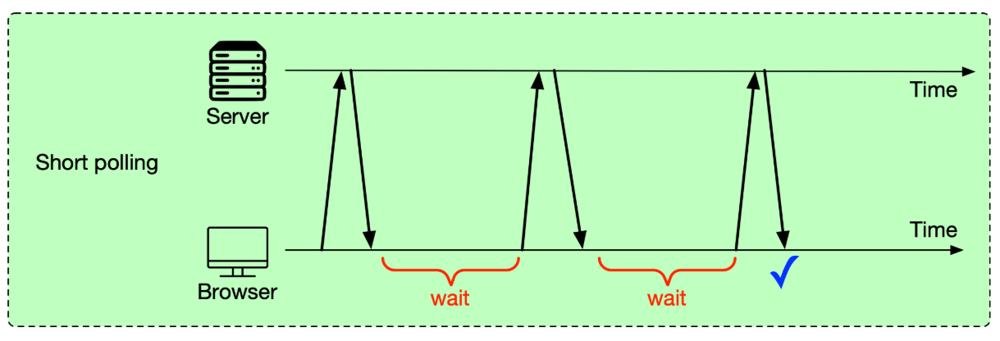
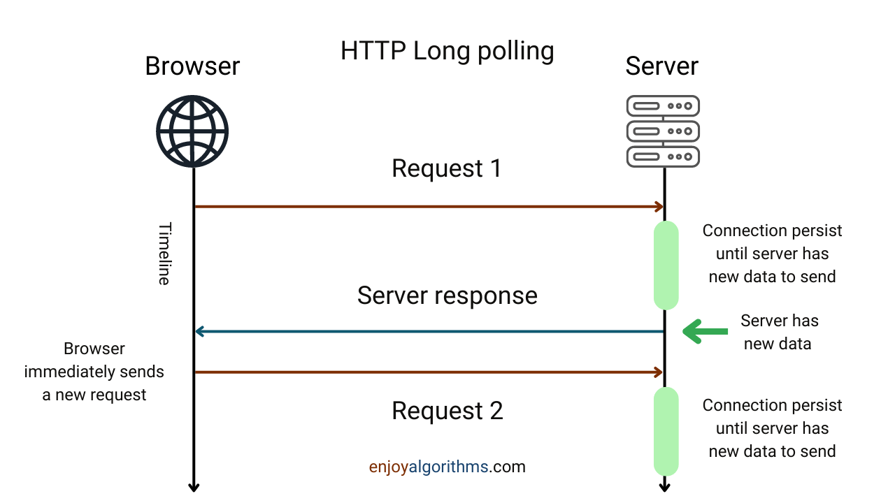
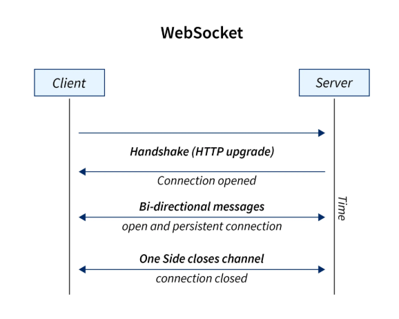
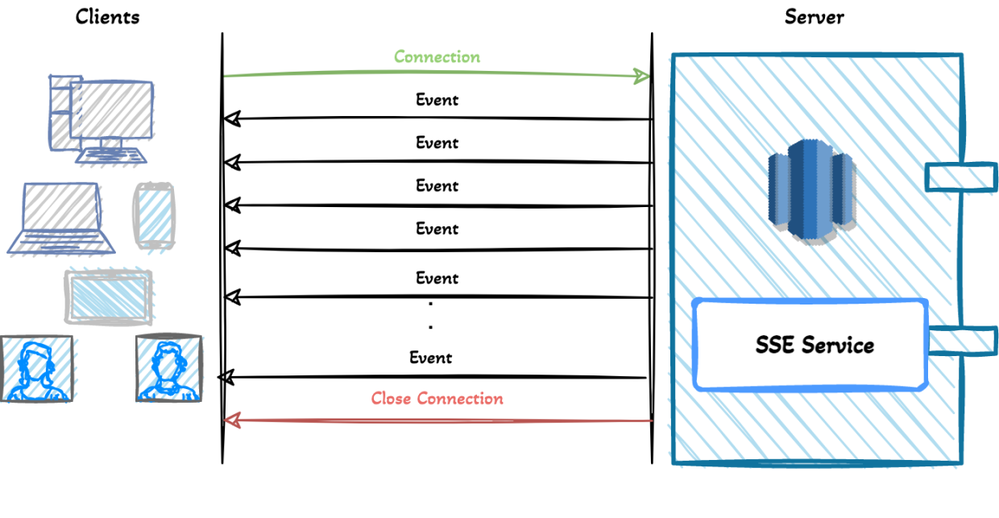
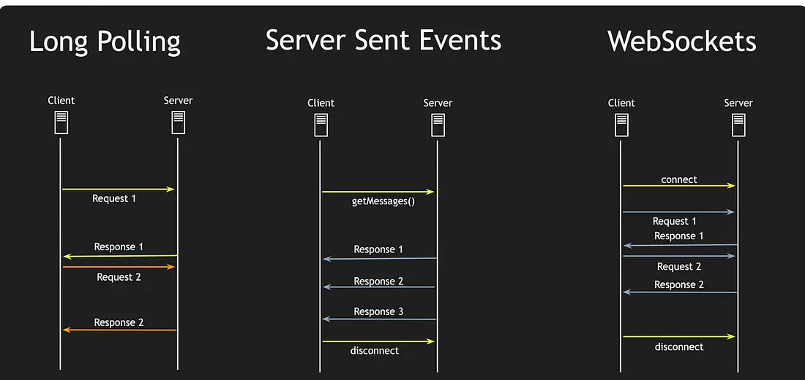
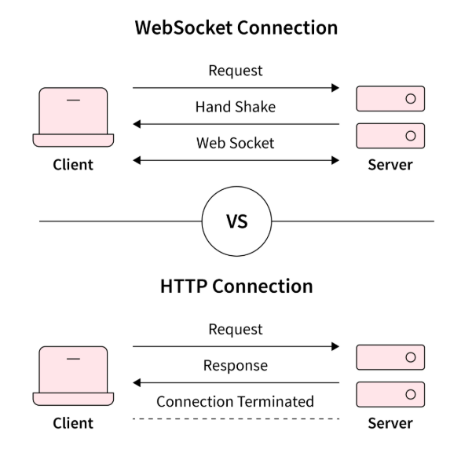

System Design Mastery
Master scalable systems with premium insights
🔄 Polling - Periodically Checking for Updates
1️⃣ What is it?
Polling is a technique where the client repeatedly asks the server for updates at regular intervals.
Example:
Client is Mobile device or Browser.
Client → “Any new data?”
Server → “No.”
(After 5 seconds)
Client → “Any new data?”
Client keeps checking even if nothing
changed.
That is Polling.
2️⃣ Why does it exist? (What problem does it solve?)
Polling solves:
- Getting near real-time updates
- Monitoring server state
- Checking for new messages
It is simple and easy to implement.
3️⃣ What breaks without it?
Without polling (or any update mechanism):
- Client won’t know about new data
- No live updates
- User must refresh page manually
Example:
Chat app without polling → messages appear only after refresh.
6️⃣ When to use / When NOT to use
✅ When to use Polling
- Simple systems
- Low traffic apps
Examples:
Checking payment status
Checking report generation
❌ When NOT to use
- High-scale real-time apps
- Chat apps with millions of users
- Stock trading systems
- Live dashboards
Because: Too many repeated requests → server overload.
7️⃣ One common mistake
🚨 Setting polling interval too low.
Example: Polling
every
1 second for 1 million users → 1M requests per second
❌ Huge load.
8️⃣ Real app connection
📱 Polling in Instagram
Modern apps avoid
heavy polling at scale.
But historically and in some workflows, polling has been used
in
multiple places.
1️⃣ Notifications (Old Method)
Earlier ( Before WebSockets
became
common ) :
Instagram app used to call GET
/notifications every few seconds.
That is short polling. Client keeps asking even if nothing changed.
2️⃣ Feed Refresh (Manual Polling)
When you
pull
to
refresh 🔄 or open the app again, it triggers a request like GET
/home-feed.
This is a form of manual polling.
3️⃣ Story Views Count
Some
systems
periodically fetch GET
/story-views to update the count.
Again → polling.
Why Modern Apps Avoid
Polling
Because: Millions of users, huge unnecessary traffic, waste of bandwidth, high server
load.
Instead they use:
👉 WebSockets
👉 Push notifications
👉 Server push mechanisms
5️⃣ Types of Polling (Very Important)
🔹 Short Polling
-
Client sends request at fixed interval ( example: every 5 seconds )
Problem: many unnecessary requests → wasted bandwidth

🔹 Long Polling
- Client sends request
- Server holds connection open
- Responds only when data available
Better efficiency than short polling.

Alternatives of Polling
🔌 1️⃣ WebSocket
WebSocket is a protocol that
creates a persistent two-way connection between client and server.
After connection is
established, both sides ( Client , Server ) can send messages anytime.
How It Works (Simple Flow)
- Client sends HTTP request to upgrade connection
- Server agrees → connection upgraded
- Connection stays open
- Both sides can send messages anytime
Example:
After connection is established:
Client ↔ Server (connection stays open)
Now:
If new data comes:
Server → “You have new message!” (instant push)
If client wants to send something:
Client → “Here is my message.”
Both sides can send anytime.

WhatsApp Example
- App opens → WebSocket connection created
- Friend sends message
- Server pushes message instantly
- You reply → goes through same connection
No repeated requests. Connection stays alive.
📡 2️⃣ Server-Sent Events (SSE)
SSE allows server to send
updates
to client automatically, but client cannot send data back through the same connection.
This is One-Way Communication
Server → Client only.
How It Works
- Client opens connection
- Server keeps connection open
- Server sends updates whenever needed
Client cannot send back on that same channel.
Example:
After connection is established:
Client → Server (opens connection)
Then:
Server → “New notification!”
Server → “Another update!”
Client CANNOT send through that same connection.
If client wants to send data:
It must use normal HTTP request separately.

Instagram Example:
1️⃣ App opens → SSE connection created.
2️⃣ Someone likes your post
3️⃣ server pushes notification.
If you
comment,
that goes through normal API request (not through SSE).

WhatsApp Uses WebSocket
Because chat needs two-way communication.
🧠 Polling vs WebSockets (Quick Compare)

🎯 Summary
Polling is a technique where the client repeatedly sends requests to the server to check for updates, which is simple but inefficient at scale.
💡 Pro Tip
If you must use polling, choose intervals
carefully (e.g., 10–30s), add exponential backoff, and cache results to reduce load.
For true
real-time at scale, prefer WebSockets or SSE.